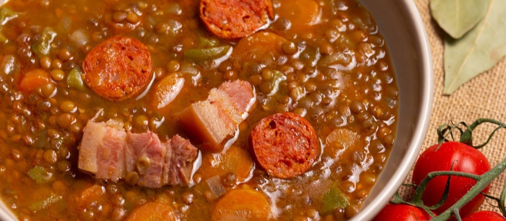

Classic Spanish Lentil Stew

Traditional spanish stew for cold days
This is a traditional and flavorful dish that warms your tummy and soul.
Ingredients
- 2 tbsp extra virgin olive oil 30 ml
- 2 links firm Spanish chorizo
- 1 onion
- 4 cloves garlic
- 1 red bell pepper
- 1 green bell pepper
- 1 carrot
- 1 large potato
- 1 tsp sweet smoked Spanish paprika 2.30 grams
- 2 tomatoes
- 1 cup dried brown lentils 210 grams
- 5 cups vegetable broth or water 1200 ml
- 1 bay leaf
- pinch sea salt
- dash black pepper
- handful fresh parsley
Steps
- Chop onion, garlic, peppers. Slice carrot. Cut potato. Grate tomatoes. Cut chorizo into 1/2 inch thick rounds.
- Heat olive oil in stock pot.
- Add Chorizo, mix for 3 minutes. Add vegetables except potato and tomato. After 4 minutes add paprika and mix. Add tomato. Simmer.
- After 3 minutes add lentils, potatoes, broth and bay leaf. Raise to high heat and mix. Place lid once boiling and lower heat.
- Simmer for 30 minutes or until lentils cooked. Only now season with salt and pepper. Remove from the heat.
- Serve. Optionally sprinkle parsley.